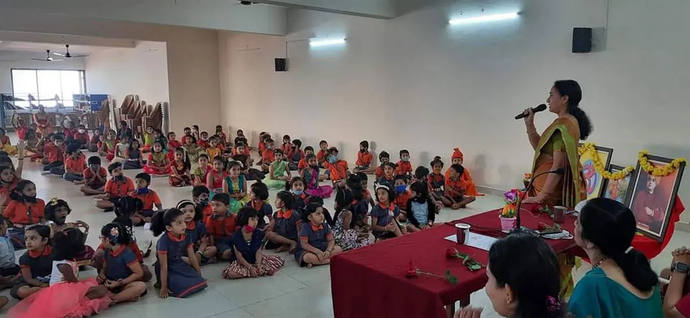
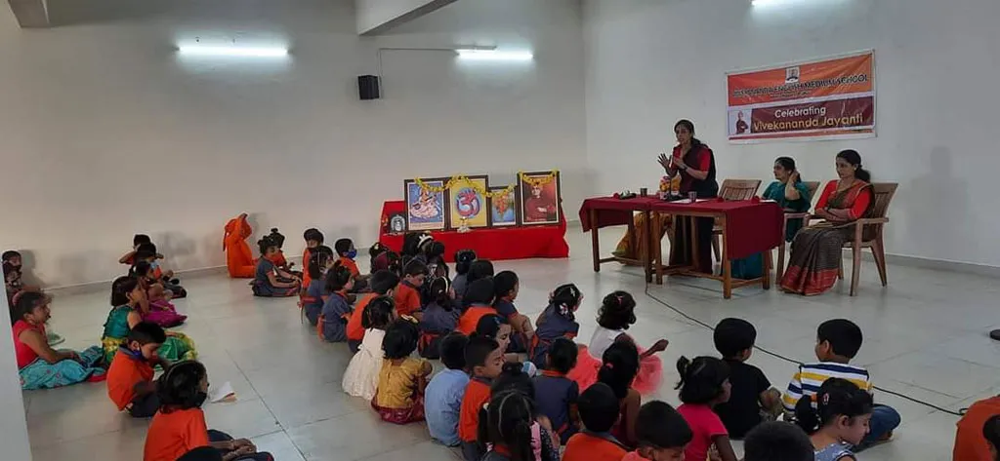

VIVEKANANDA CENTRAL SCHOOL,NAGARA
Vivekananda Central School is a Education center located at Vivekananda Campus, Nehru Nagar, Puttur, Karnataka 574203, IN. The business is listed under education center category. It has received 9 reviews with an average rating of 4.9 stars.
